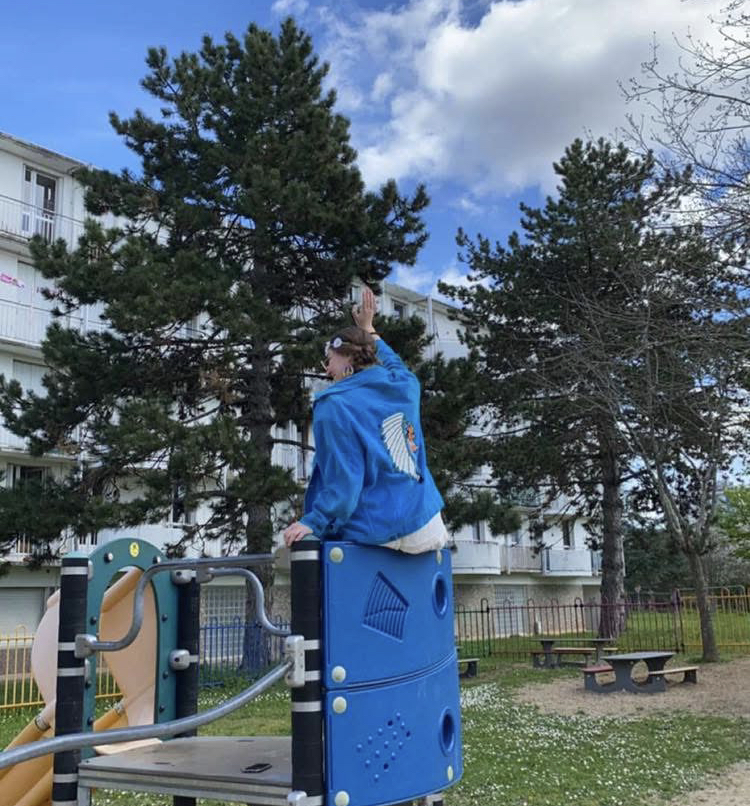
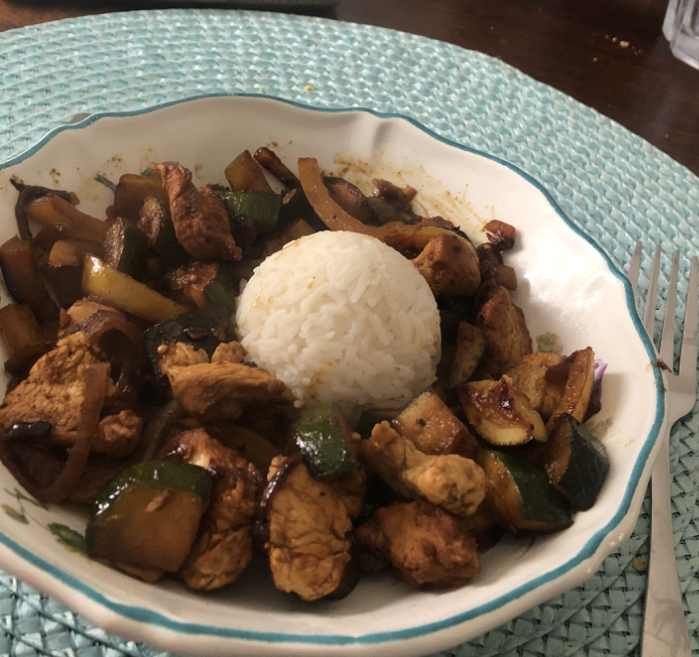
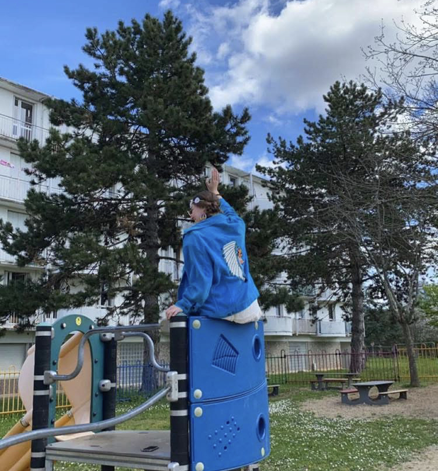
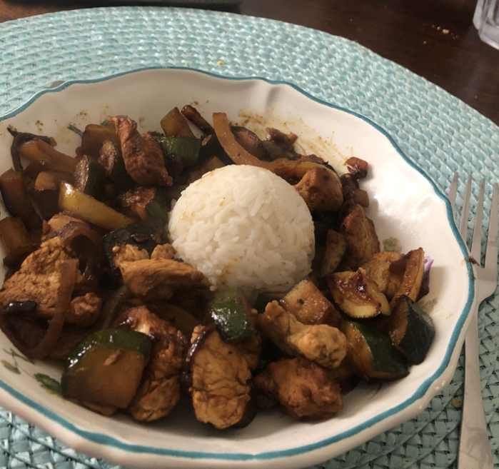

Bienvenue sur mon Portfolio
Je m'appelle Héléna Guertin, j'ai 19 ans et je suis actuellement étudiant en BUT Science des données. Curieuse et motivée, je m'intéresse particulièrement à l’analyse et à l’exploitation des données. Sur ce site vous pourrez découvrir les projets qui m'ont le plus marqué et appris lors de ma première année, dans la rubrique " Mes Projets "
Pour mieux me connaitre :
En dehors de mes études, je suis passionné par le sport, la cuisine, les animaux, les voyages simples et la photographie, qui me permet de capturer des instants du quotidien ou de mes découvertes. Dès que j’en ai l’occasion, je m’engage également dans des actions de bénévolat, cela me permet de faire des rencontres tout en me rendant utile. Ces expériences enrichissent mon parcours personnel et professionnel, tout en renforçant mes valeurs d’entraide et d’ouverture aux autres.
 


